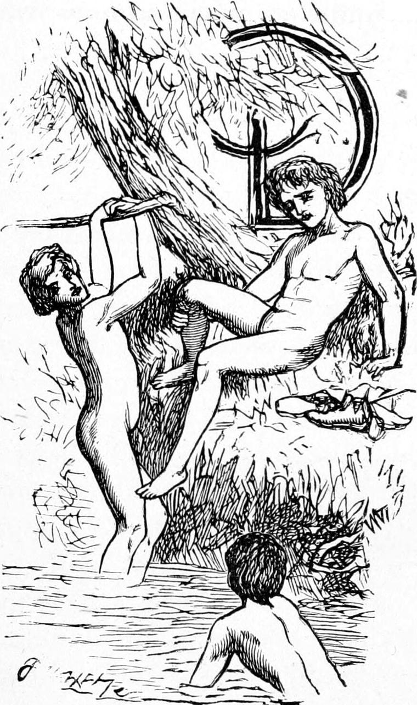

During this summer, I made the acquaintance at school of a boy called Peter Mason. Peter was a clever boy, from whose merry eye a sparkle was always ready to break. He seldom knew his lesson well, but, when kept in for not knowing it, had always learned it before any of the rest had got more than half through. Amongst those of his own standing he was the acknowledged leader in the playground, and was besides often invited to take a share in the amusements of the older boys, by whom he was petted because of his cleverness and obliging disposition. Beyond school hours, he spent his time in all manner of pranks. In the hot summer weather he would bathe twenty times a day, and was as much at home in the water as any dabchick. And that was how I came to be more with him than was good for me.
There was a small river not far from my father’s house, which at a certain point was dammed back by a weir of large stones to turn part of it aside into a mill-race. The mill stood a little way down, under a steep bank. It was almost surrounded with trees, willows by the water’s edge, and birches and larches up the bank. Above the dam was a fine spot for bathing, for you could get any depth you liked—from two feet to five or six; and here it was that most of the boys of the village bathed, and I with them. I cannot recall the memory of those summer days without a gush of delight gurgling over my heart, just as the water used to gurgle over the stones of the dam. It was a quiet place, particularly on the side to which my father’s farm went down, where it was sheltered by the same little wood which farther on surrounded the mill. The field which bordered the river was kept in natural grass, thick and short and fine, for here on the bank it grew well, although such grass was not at all common in that part of the country: upon other parts of the same farm, the grass was sown every year along with the corn. Oh the summer days, with the hot sun drawing the odours from the feathery larches and the white-stemmed birches, when, getting out of the water, I would lie in the warm soft grass, where now and then the tenderest little breeze would creep over my skin, until the sun baking me more than was pleasant, I would rouse myself with an effort, and running down to the fringe of rushes that bordered the full-brimmed river, plunge again headlong into the quiet brown water, and dabble and swim till I was once more weary! For innocent animal delight, I know of nothing to match those days—so warm, yet so pure-aired—so clean, so glad. I often think how God must love his little children to have invented for them such delights! For, of course, if he did not love the children and delight in their pleasure, he would not have invented the two and brought them together. Yes, my child, I know what you would say,—“How many there are who have no such pleasures!” I grant it sorrowfully; but you must remember that God has not done with them yet; and, besides, that there are more pleasures in the world than you or I know anything about. And if we had it all pleasure, I know I should not care so much about what is better, and I would rather be made good than have any other pleasure in the world; and so would you, though perhaps you do not know it yet.
One day, a good many of us were at the water together. I was somebody amongst them in my own estimation because I bathed off my father’s ground, while they were all on a piece of bank on the other side which was regarded as common to the village. Suddenly upon the latter spot, when they were all undressed, and some already in the water, appeared a man who had lately rented the property of which that was part, accompanied by a dog, with a flesh-coloured nose and a villainous look—a mongrel in which the bull predominated. He ordered everyone off his premises. Invaded with terror, all, except a big boy who trusted that the dog would be more frightened at his naked figure than he was at the dog, plunged into the river, and swam or waded from the inhospitable shore. Once in the embrace of the stream, some of them thoughtlessly turned and mocked the enemy, forgetting how much they were still in his power. Indignant at the tyrant, I stood up in the “limpid wave”, and assured the aquatic company of a welcome to the opposite bank. So far all was very well. But their clothes! They, alas! were upon the bank they had left!
The spirit of a host was upon me, for now I regarded them all as my guests.
“You come ashore when you like,” I said; “I will see what can be done about your clothes.”
I knew that just below the dam lay a little boat built by the miller’s sons. It was clumsy enough, but in my eyes a marvel of engineering art. On the opposite side stood the big boy braving the low-bred cur which barked and growled at him with its ugly head stretched out like a serpent’s; while his owner, who was probably not so unkind as we thought him, stood enjoying the fun of it all. Reckoning upon the big boy’s assistance, I scrambled out of the water, and sped, like Achilles of the swift foot, for the boat. I jumped in and seized the oars, intending to row across, and get the big boy to throw the clothes of the party into the boat. But I had never handled an oar in my life, and in the middle passage—how it happened I cannot tell—I found myself floundering in the water.
Now, although you might expect that the water being dammed back just here, it would be shallow below the dam, it was just the opposite. Had the bottom been hard, it would have been shallow; but as the bottom was soft and muddy, the rush of the water over the dam in the winter-floods had here made a great hollow. There was besides another weir a very little way below which again dammed the water back; so that the depth was greater here than in almost any other part within the ken of the village boys. Indeed there were horrors afloat concerning its depth. I was but a poor swimmer, for swimming is a natural gift, and is not equally distributed to all. I might have done better, however, but for those stories of the awful gulf beneath me. I was struggling and floundering, half-blind, and quite deaf, with a sense of the water constantly getting up and stopping me, whatever I wanted to do, when I felt myself laid hold of by the leg, dragged under water, and a moment after landed safe on the bank. Almost the same moment I heard a plunge, and getting up, staggering and bewildered, saw, as through the haze of a dream, a boy swimming after the boat, which had gone down with the slow current. I saw him overtake it, scramble into it in midstream, and handle the oars as to the manner born. When he had brought it back to the spot where I stood, I knew that Peter Mason was my deliverer. Quite recovered by this time from my slight attack of drowning, I got again into the boat, and leaving the oars to Peter, was rowed across and landed. There was no further difficulty. The man, alarmed, I suppose, at the danger I had run, recalled his dog; we bundled in the clothes; Peter rowed them across; Rory, the big boy, took the water after the boat, and I plunged in again above the dam. For the whole of that summer and part of the following winter, Peter was my hero, to the forgetting even of my friend Turkey. I took every opportunity of joining him in his games, partly from gratitude, partly from admiration, but more than either from the simple human attraction of the boy. It was some time before he led me into any real mischief, but it came at last.